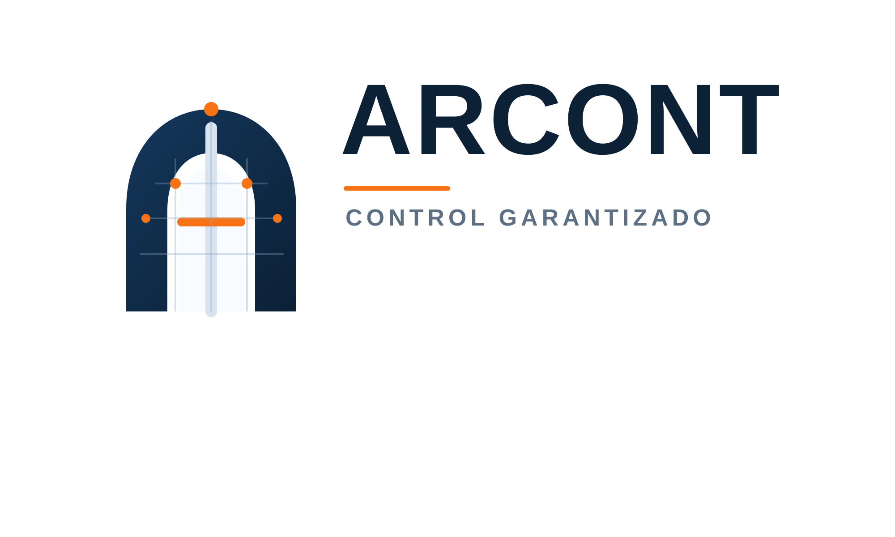
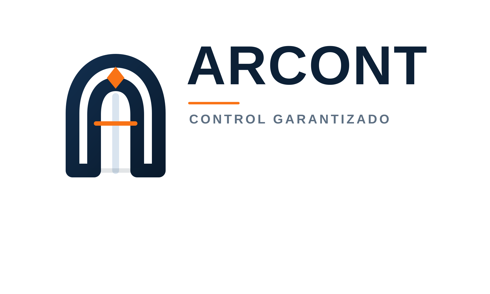
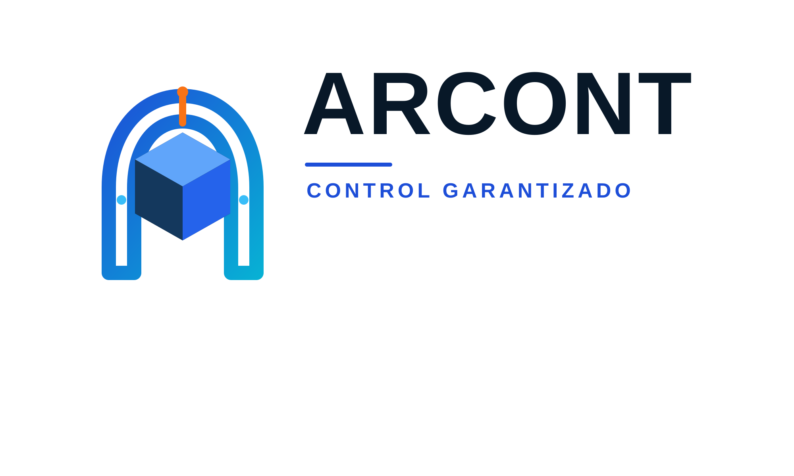
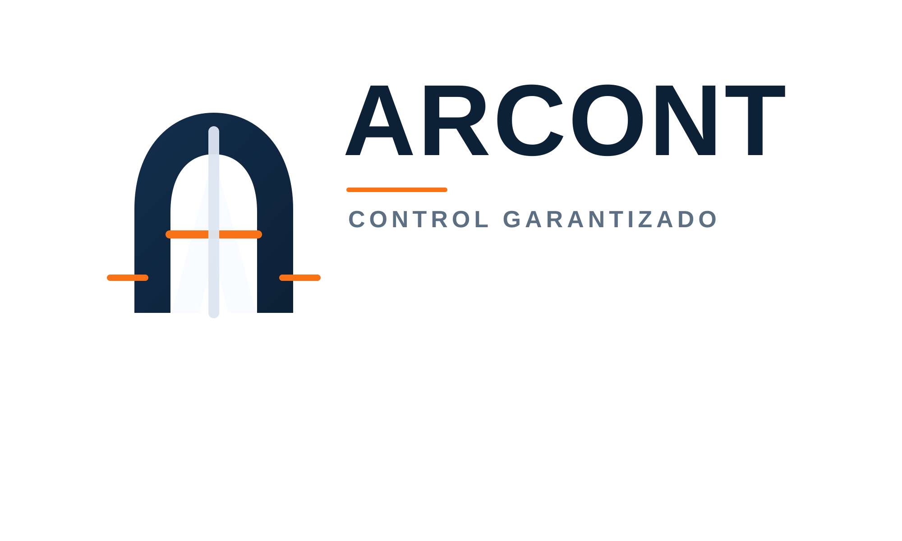

Arch Grid
La mas tecnica. El arco se mezcla con una reticula y nodos de control, ideal si quieres que ARCONT se vea ingenieril y preciso.

Propuestas donde el arco ya es parte central del simbolo. Buscan mezclar construccion, control y software con una lectura mas memorable.
La mas tecnica. El arco se mezcla con una reticula y nodos de control, ideal si quieres que ARCONT se vea ingenieril y preciso.

Mas arquitectonica y corporativa. El arco tipo portal y la pieza superior recuerdan una dovela o keystone estructural.

La mas digital. Une un arco limpio con un cubo tipo BIM para comunicar tecnologia, modelado y plataforma.

Mas fuerte y sencilla. Mantiene un gesto de A estructural, pero ahora enmarcada por un arco para que la idea sea mas directa.
